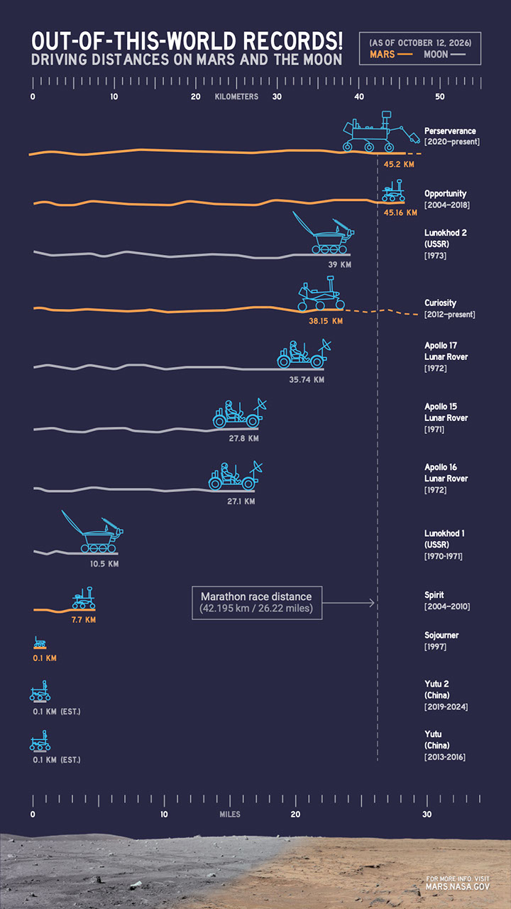
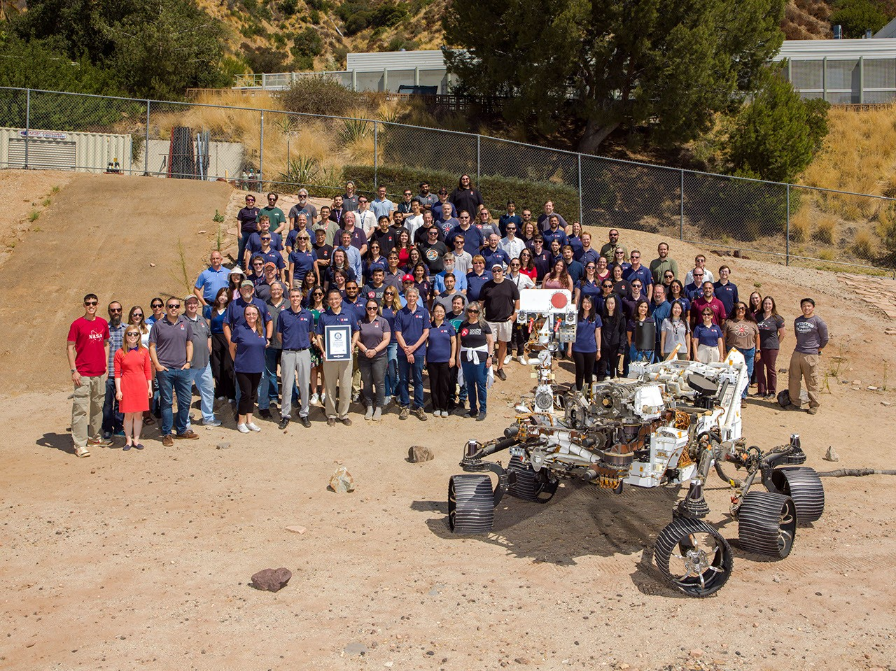
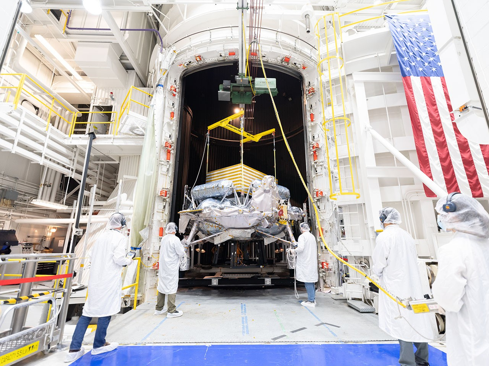

01
Santos derruba três transfer bans aplicados pela Fifa; veja detalhes
Gazeta Esportiva · 13/10/2026 · 17:15 (Brasília)Fonte original ↗
GZHBrasil x Argentina hoje: onde assistir ao vivo, horário e escalações pelo amistoso femininoBrazil JournalA nova estratégia da Europa para lidar com os EVs chinesesKuwait TimesKuwait apela a parcerias globais mais fortes em matéria de desenvolvimento, segurança e direitos humanos www.folhabv.com.brFórmula 1 anuncia GP em Ruanda e prevê retorno à África em 2030Starlust.orgAssista: SpaceX lança 6.300 libras de carga e os painéis solares finais para a ISSInfoMoneyPetróleo fecha sem direção única com alta da oferta russa e tensões no Oriente MédioRNZCopa do Mundo da Rugby League 2026: times Kiwis, Kiwi Ferns, horários de início e como assistir
www.folhabv.com.brFórmula 1 anuncia GP em Ruanda e prevê retorno à África em 2030Starlust.orgAssista: SpaceX lança 6.300 libras de carga e os painéis solares finais para a ISSInfoMoneyPetróleo fecha sem direção única com alta da oferta russa e tensões no Oriente MédioRNZCopa do Mundo da Rugby League 2026: times Kiwis, Kiwi Ferns, horários de início e como assistir NASA Science (.gov)Gelo marinho antártico atinge seu máximo em 2026Yeni Şafak EnglishFitch expects Hormuz reopening deal in early 2027
NASA Science (.gov)Gelo marinho antártico atinge seu máximo em 2026Yeni Şafak EnglishFitch expects Hormuz reopening deal in early 2027 www.nsctotal.com.brChrista Pike: ligações de emergência revelam confusão durante tentativa de execução nos EUAFolha VitóriaBrasileiro registra explosão em prédio durante ataque russo na Ucrânia
www.nsctotal.com.brChrista Pike: ligações de emergência revelam confusão durante tentativa de execução nos EUAFolha VitóriaBrasileiro registra explosão em prédio durante ataque russo na Ucrânia Newstalk ZBAustrália enfrenta desaceleração da economia com a inflação entre as piores
Newstalk ZBAustrália enfrenta desaceleração da economia com a inflação entre as piores InvestNewsEmbraer compra participação em empresa na Índia em meio a planos de expansão para o KC-390
InvestNewsEmbraer compra participação em empresa na Índia em meio a planos de expansão para o KC-390 Forbes AfricaPMEs do Sudão sobre apoio técnico e assistência financeira em meio à guerra civilO TEMPOBombeiros atualizam combate a incêndio na Terra Indígena Maxakali; fogo segue avançando
Forbes AfricaPMEs do Sudão sobre apoio técnico e assistência financeira em meio à guerra civilO TEMPOBombeiros atualizam combate a incêndio na Terra Indígena Maxakali; fogo segue avançando BBC Science'Jellyfish' effect lights up US sky after SpaceX launchGazeta do PovoMilei aciona tribunal internacional contra Reino Unido por exploração de petróleo nas MalvinasStuff.co.nzNZ's retirement time bomb: Why we must redefine retirement todayVietnam.vnO Prémio Nobel da Ciência de 2026 homenageia descobertas que mudam a nossa visão do mundo.
BBC Science'Jellyfish' effect lights up US sky after SpaceX launchGazeta do PovoMilei aciona tribunal internacional contra Reino Unido por exploração de petróleo nas MalvinasStuff.co.nzNZ's retirement time bomb: Why we must redefine retirement todayVietnam.vnO Prémio Nobel da Ciência de 2026 homenageia descobertas que mudam a nossa visão do mundo. www.anews.com.trTürkiye deve fortalecer a frente interna em meio à instabilidade regional, diz o presidente do parlamentoInfoMoneyDirigente do Fed não vê motivo, por enquanto, para altas de juros em 2027 nos EUASBT NewsIndústrias de moda e café tentam ganhar mercado na Europa
www.anews.com.trTürkiye deve fortalecer a frente interna em meio à instabilidade regional, diz o presidente do parlamentoInfoMoneyDirigente do Fed não vê motivo, por enquanto, para altas de juros em 2027 nos EUASBT NewsIndústrias de moda e café tentam ganhar mercado na Europa BBC WorldMissiles intercepted near Riyadh after Saudi coalition hits Yemen fuel depotwww.jwave.com.brSANTA lança Chinese beauty girl com influência do pop japonês dos anos 1980LEADERSHIP NewspapersTerrorists Using Social Media, Crypto To Recruit, Fund Attacks — Ribadu, AUCanaltechGod of War 3 ganha versão nativa para PC com suporte a 240 FPSSpaceflight NowSpaceX lança ciência e carga da NASA para a Estação Espacial InternacionalTRT WorldDo Brexit ao Breturn: o que motivou a reviravolta do Reino Unido em relação à UE e o que isso significa para o grupoBhaskar EnglishPrêmios Nobel 2026: Quais descobertas em Física, Química e Medicina ganharam o Prêmio Nobel este ano?
BBC WorldMissiles intercepted near Riyadh after Saudi coalition hits Yemen fuel depotwww.jwave.com.brSANTA lança Chinese beauty girl com influência do pop japonês dos anos 1980LEADERSHIP NewspapersTerrorists Using Social Media, Crypto To Recruit, Fund Attacks — Ribadu, AUCanaltechGod of War 3 ganha versão nativa para PC com suporte a 240 FPSSpaceflight NowSpaceX lança ciência e carga da NASA para a Estação Espacial InternacionalTRT WorldDo Brexit ao Breturn: o que motivou a reviravolta do Reino Unido em relação à UE e o que isso significa para o grupoBhaskar EnglishPrêmios Nobel 2026: Quais descobertas em Física, Química e Medicina ganharam o Prêmio Nobel este ano? EstadãoNova porta-voz da Casa Branca confunde Trump com marido e não responde sobre guerraA TARDERússia prende jornalista japonês sob acusação de espionagem
EstadãoNova porta-voz da Casa Branca confunde Trump com marido e não responde sobre guerraA TARDERússia prende jornalista japonês sob acusação de espionagemKuwait pede parcerias globais mais fortes em matéria de desenvolvimento, segurança e direitos humanos Kuwait Times
Categoria prevê acordo de dez anos para a realização da corrida; última prova no continente ocorreu em 1993, na África do Sul
O grupo xiita libanês Hezbollah pagará até US$ 14.000 para famílias que tiveram suas casas no Líbano destruídas ou que se tornaram inabitáveis durante a guerra com Israel, afirmou nesta terça-feira, 13, o chefe do Conselho Executivo do grupo.Em uma coletiva de imprensa, o chefe do Conselho Executivo do Hezbollah, Ali Daamoush, acusou o Estado libanês de não cumprir suas obrigações de ajudar os deslocados.Ele afirmou que as famílias que perderam suas casas em Beirute e nos subúrbios do sul do Líbano receberiam US$ 14.000 cada, enquanto as de outras partes do país receberiam US$ 12.000. Cada pagamento inclui US$ 8.000 para mobília, e o restante
Copa do Mundo da Rugby League 2026: Kiwis, times Kiwi Ferns, horários de início e como assistir RNZ

Gravações de chamadas de emergência revelaram falhas de comunicação entre funcionários de uma prisão do Tennessee e atendentes durante a tentativa
Austrália enfrenta desaceleração da economia com inflação entre as piores Newstalk ZB
Um efeito de 'água-viva' iluminou o céu nos EUA após o lançamento do foguete SpaceX Falcon 9.
A Turquia deve fortalecer a sua frente interna num contexto de intensificação da concorrência geopolítica no Médio Oriente e nas regiões vizinhas, disse o Presidente do Parlamento...
A coligação liderada pela Arábia Saudita que luta no Iémen atingiu um depósito de combustível perto da capital controlada pelos Houthi, Sanaa.
O Fundo Monetário Internacional (FMI) projetou o crescimento da economia brasileira em 2,2% em 2026, no documento Perspectivas da Economia Mundial , divulgado na noite de segunda-feira (12). Na versão anterior do estudo, publicada em julho, a estimativa era de crescimento do Produto Interno Bruto (PIB, conjunto de todos os bens e serviços produzidos no país) em 2,4%. Para 2027, a previsão de avanço passou de 2,2% para 1,9%. Notícias relacionadas: FMI elogia Pix e cobra autonomia financeira do Banco Central. FMI reduz projeções de crescimento para América Latina. FMI: IA pode impulsionar crescimento, mas aumentar tensões econômicas. Apesar da
Os trabalhistas não podem contar com o desaparecimento de uma nação, alerta Chalmers ABC News & Headlines – Australian Broadcasting Corporation

Este infográfico ilustra as distâncias percorridas por vários rovers na superfície da Lua e de Marte na Terra. Dos veículos mostrados, os rovers da NASA em Marte
Por que os australianos são obcecados por propriedades? Porque temos que ser. E há grandes razões pelas quais isso está sempre em nossas mentes.
A guerra com o Irão expôs os limites das garantias de segurança de Washington, aumentando a perspectiva de uma Ásia Ocidental mais volátil e estrategicamente fragmentada.
Um ano após o cessar-fogo, a ONU comemora os seus fracassos Monitor do Médio Oriente

Guilfoyle, as alegações de conduta imprópria são “falsas” e ser embaixador foi a “honra de uma vida”.
Pressenza - Agência Internacional de Imprensa

Descrição Membros da equipe da missão Perseverance Mars da NASA se reúnem no Mars Yard do Laboratório de Propulsão a Jato da agência no sul da Califórnia com um certificado do Guinness World Records marcando o recorde de distância do rover no Planeta Vermelho. Posicionado à frente da equipe está OPTIMISM (Operational Perseverance Twin for Integration of Mechanisms and Instruments […]

Senador e candidato à Presidência diz pela primeira vez que votará a favor da proposta, defendida pela 'maioria dos trabalhadores', segundo ele.

Centenas de lojas foram alvo do ataque cibernético noturno, que estragou alimentos frescos e congelados avaliados em milhões de euros.
Descrição Os rastros do rover e uma paisagem rochosa marciana são mostrados nesta imagem capturada por uma das câmeras de navegação (navcams) a bordo do rover Perseverance Mars da NASA em 11 de outubro de 2026, o 2.006º dia marciano, ou sol, da missão. Durante a viagem daquele sol, abrangendo 299,6 pés (91,31 metros), a missão ultrapassou um marco importante: aumentar o total do Perseverance [...]
A IA pode aumentar a lacuna entre os que não têm e os que têm muito https://aapnews.aap.com.au/
“A geografia não define os limites dos sistemas climáticos”: MoS Kirti Vardhan Singh pede cooperação no Ártico Big News Network.com
A votação do segundo turno das eleições, no próximo dia 25, terá um cenário um pouco diferente em algumas cidades do país, com votação também para o cargo de prefeito e, em outros casos, com plebiscitos para ouvir a opinião popular. As votações de plebiscito ocorrerão em cidades dos estados de Mato Grosso e do Paraná. Já o pleito com eleição suplementar para prefeito, ocorrerá em cidades do Paraná, Rio Grande do Sul, Rio de Janeiro, São Paulo, Sergipe e Tocantins. Notícias relacionadas: Nunes Marques volta a suspender Exército do Lula e impõe registro. Nunes Marques convoca campanhas de Lula e Flávio para reunião no TSE . Fim da escala 6x1: c

Pela primeira vez desde que o Reino Unido deixou a União Europeia, o país tem um primeiro-ministro que quer debater o Brexit 'sem hesitar'.
Notícias de última hora da Nova República
Três pequenas espaçonaves apoiadas pela NASA, junto com muitas cargas comerciais, são mostradas antes de serem encapsuladas em um SpaceX Falcon 9 antes do lançamento em 1º de outubro de 2026. O ASCENT Propulsion Dual Mode CubeSat, os Supernova Remnants and Proxies for ReIonization Testbed Experiment (SPRITE) CubeSat, e a missão Small Spacecraft Propulsion and Inspection Capability (SSPICY) demonstrarão [...]
EUA proíbem viajantes de 3 países por 30 dias em meio a preocupações com Ebola Yen News
Infraestrutura do Pacífico enfrenta crescente ameaça climática FBC News

O Papa Leão passou por uma cirurgia bem-sucedida para remover um lobo inferior do pulmão direito, disse o Vaticano.
O plano de governo do candidato Luiz Inácio Lula da Silva (PT) para política externa destaca o fortalecimento das relações do Sul Global e, ao mesmo tempo, defende estimular as relações “com todas as regiões do mundo”. Por sua vez, o plano do candidato Flávio Bolsonaro (PL) para política externa defende uma aproximação maior com Estados Unidos (EUA), Israel e Argentina. Notícias relacionadas: Conheça as propostas de Flávio e Lula para a segurança pública. Brasil cria política para ampliar produção de minerais críticos. Terras raras, minerais estratégicos e críticos: entenda as diferenças. Destaque na campanha deste ano, a política externa do
Plataforma governamental permite que alunos consertem o trânsito no Africa Herald.co.zw

Seis tripulantes são resgatados, mas 10 estão desaparecidos depois que um navio mercante foi afundado durante a noite, diz a Bulgária.

Descrição Um módulo de pouso lunar da Voyager Technologies completou quase três meses de testes ambientais no Laboratório de Propulsão a Jato da NASA, no sul da Califórnia, no final de setembro de 2026. Os testes demonstram que a espaçonave está preparada para enfrentar as duras condições de lançamento, sua jornada até a Lua e pouso na superfície. Seu teste final foi […]
'Esses modelos estão errados': Bernard Hickey mira nas previsões econômicas do Tesouro NZ Herald

Segundo nova decisão de presidente do TSE, canal só poderá voltar a funcionar após a campanha do presidente Lula registrá-lo como um instrumento formal de campanha ao TSE; decisão veio após analise preliminar do TSE não identificar notícias falsas no canal.
A União Africana e o Reino de Eswatini concluem o PACTED 2026 com compromissos renovados para transformar a profissão docente de África e homenagear professores notáveis União Africana
National descreve compromissos políticos para seus primeiros 100 dias se liderar o próximo governo Farmers Weekly
Von der Leyen promete mais dinheiro aos regimes do Egipto e da Líbia para manter as vítimas do genocídio sudanês fora da Europa EUobserver
Nobel de Física destaca o papel da Antártida na exploração do cosmos The Conversation
Última guerra na Ucrânia: mísseis russos atingem o centro de Kiev antes que o alerta de ataque aéreo soe The Kyiv Independent
Diplomacia na Escola Aérea Johns Hopkins de Estudos Internacionais Avançados
Plano nacional para dar as boas-vindas a mais Kiwis Home Scoop - Notícias da Nova Zelândia
Descoberta ganhadora do Nobel permite a criação de medicamentos quirais sob demanda, o cientista
O lançamento do foguete SpaceX na Flórida fornece 'água-viva' espacial e estrondos sônicos Florida Today
‘Bulls**t’: Economista sobre inflação real causa News.com.au
O presidente do Tribunal Superior Eleitoral (TSE), Kassio Nunes Marques, determinou há pouco a reativação do canal “Exército do Lula”, criado no WhatsApp para postagens de apoios ao candidato à reeleição Luiz Inácio Lula da Silva (PT). O canal é administrado pelo deputado federal André Janones (Rede-MG). A medida foi tomada após a campanha de Lula registrar o canal no tribunal , conforme foi determinado pelo ministro na manhã de hoje. Nesta terça (13), o presidente do TSE havia determinado, pela segunda vez, a retirada do ar do canal , alegando a falta de registro como motivo. A decisão foi tomada em processo administrativo, que não precisa p
Cooperação global, não disputa pelo poder The Manila Times
NASA e DOE assinam memorando de entendimento sobre energia nuclear espacial e propulsão energynews.pro
EUA aprovam venda de armas por US$ 11 bilhões para Taiwan, o que provavelmente aumentará as tensões com a China Bol News
Qantas lança grande venda para o amado destino australiano por US$ 289 Yahoo Lifestyle Australia

Joseph Kabila já tinha negado ter ligações com os rebeldes M23, que controlam grande parte do leste da RD Congo.
Lançamento do foguete SpaceX visível do centro de Pa. Você viu? O Sol da Tarde